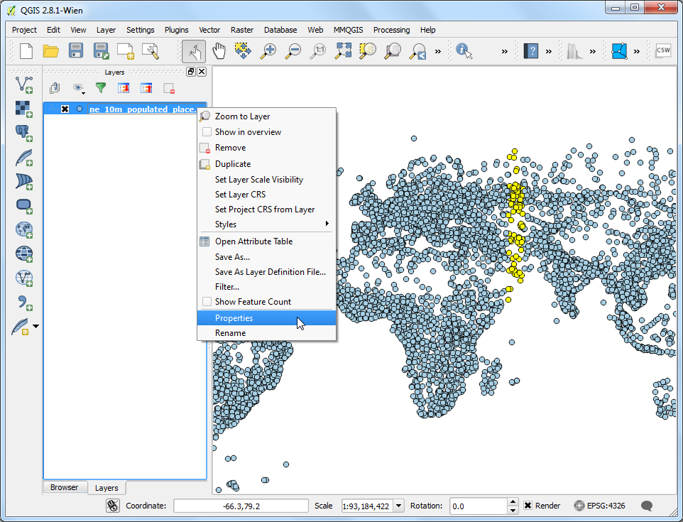
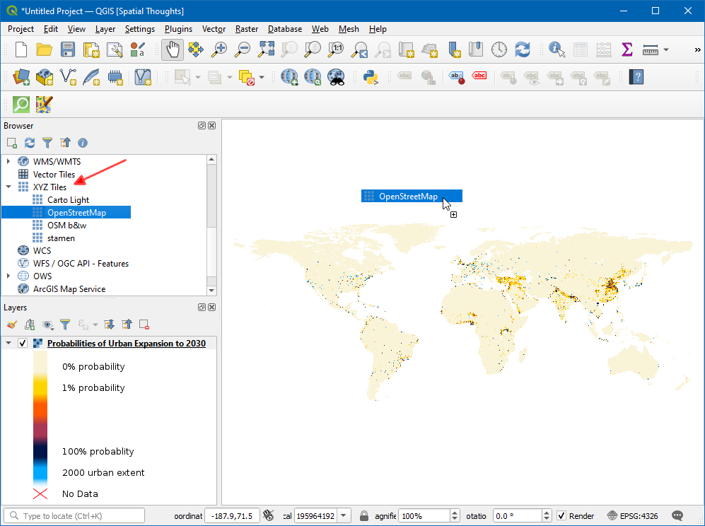
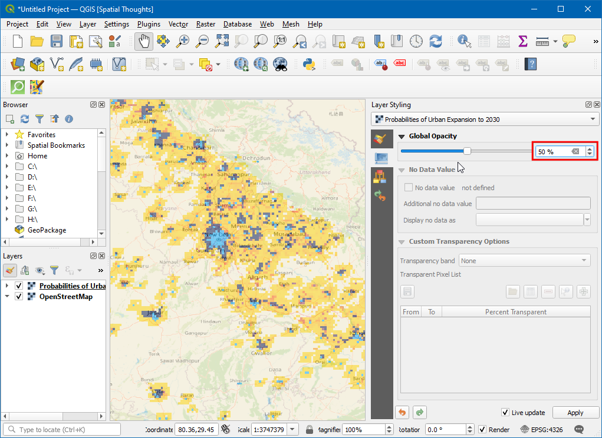
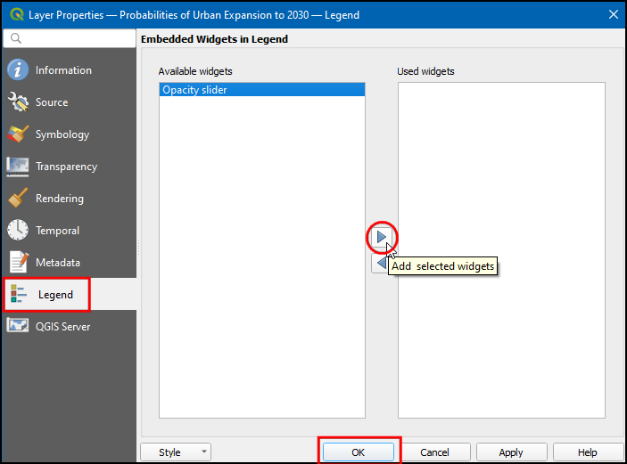
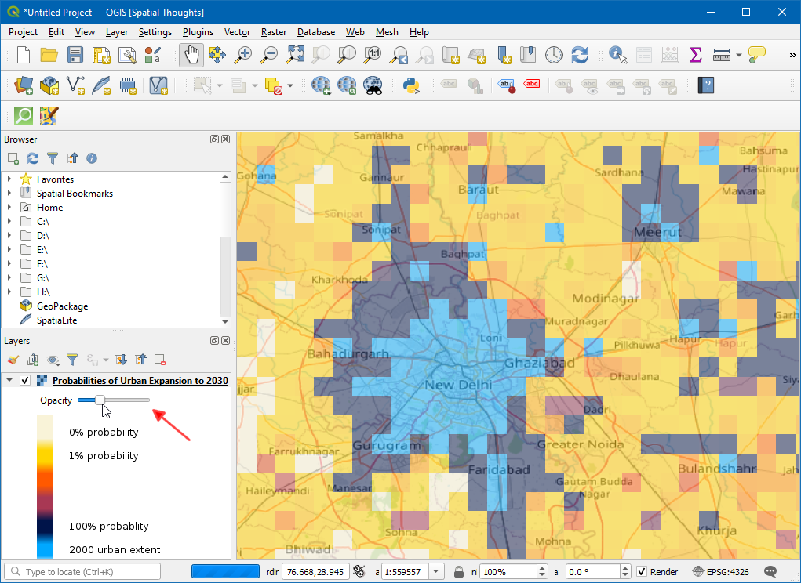

Ujaval Gandhi
Ujaval GandhiWorking with WMS Data (QGIS3)¶
Often you need reference data layers for your basemap or to display your results in the context of other datasets. Many organizations publish datasets online that can be readily used in GIS. A popular standard for publishing maps online is called WMS (Web Map Service). This is a better choice for using reference layers as you get access to rich datasets in your GIS without the hassle of downloading or styling the data.
هشدار
SEDAC services are currently undergoing migration and not accessible. We will
update the tutorial oncethe migration is complete. Meanwhile, you may follow the
tutorial using an alternate WMS service, such as NLCD Landcover WMS https://www.mrlc.gov/geoserver/NLCD_Canopy/wms?SERVICE=WMS&REQUEST=GetCapabilities
Overview of the task¶
In this tutorial, we will load a WMS layer of Urban Expansion to 2030 published by the Socioeconomic Data and Applications Center (SEDAC).
Other skills you will learn¶
How to adjust transparency of a layer and add opacity control slider widget in QGIS.
Get the Data¶
Visit the Global Grid of Probabilities of Urban Expansion by SEDAC, this data contains probabilistic forecasts of global urban land cover change from 2000 to 2030 at a 2.5 arc-minute resolution. Click on Map Services.

Copy the WMS service URL. This is the URL to the WMS service which hosts the data layer.

Procedure¶
Open QGIS and click Open Data Source Manager.

In the Data Source Manager dialog box switch to WMS/WMTS, click New.

In the Create a New WMS/WMTS Connection dialog box under Connection Details enter the Name as
SEDAC, and paste the copied URL in URL textbox. Click OK. If you get an error with the copied URL, try with the alternate URLhttps://sedac.ciesin.columbia.edu/geoserver/ows.
توجه
You are creating a new connection to a WMS service - not a specific layer. A single service usually offers multiple layers that can be added to your project.
Now in the Data Source Manager dialog box, click Connect. All available layers will be loaded. You will notice different IDs listed next to the layers. ID
0means you get a map of all the layers. If you do not want all the layers, you can expand the list by clicking on ▸ icon and selecting the layer of interest.
For this tutorial, we are interested in a specific layer. Search for
Probabilities of Urban Expansion to 2030. Select the default version of urban expansion 2030 layer.
In the Image Encoding section, you need to choose an image format. The image format is important, and it is dependent on use case. Based on user perspective here are some pointers,
Quality: File compression for a PNG is lossless, for JPEG it is a lossy compression and TIFF can be either. That means the quality of PNGs will be better compared to JPEG. If your main purpose is to print a map, use PNG.
Speed: Since PNGs images are uncompressed and thus larger in size, they will take longer to load. If you are using the layer in your project as a reference layer and need to zoom/pan a lot, use JPEG.
Client Support: QGIS supports most of the formats, but if you are developing web applications, browsers usually do not support TIFF, so you should choose another format.
Type of data: If your layers are primarily vector, PNG will give better results. For imagery layers, JPEG is usually a better choice.
For this tutorial, choose PNG as the format. Change the Layer name if you wish and click Add.

Now a Probabilities of Urban Expansion to 2030 layer will be loaded in the canvas. Use the Zoom/Pan tools to explore the layer. The way the WMS service works is that every time you zoom/pan, it sends your viewport coordinates to the server and the server creates an image for that viewport and returns it to the client. So, there will be some delay before you see the image for the area after you have zoomed in. Hence, an internet connection is always required to access this layer.

Now, zoom to any known place and click on the Identify Features icon in toolbar.

Click on any pixel in canvas, it will pop up a dialog box with the cell value. This the value of the pixel in the layer - which represents the probability that the pixel will be urbanized by 2030. Since the layer is not stored locally these values are retrieved from the service provider. You can see the results better by selecting the Format as
HTMLand View asTree.
توجه
The information is retrieved by GetFeatureInfo, it is WMS standard call that allows us to retrieve information about features and coverages displayed in a map. If the map is composed of various layers, and GetFeatureInfo can be instructed to return multiple feature descriptions, HTML/GeoJSON is the usual file format in which the information is retrieved.
To view, the additional information about the layer right-click on the layer and select Properties....

In the Layer Properties dialog box, switch to the Information tab here all the information such as data provider, projections, extent can be found. Click OK to close the dialog-box after exploring.

In QGIS Browser, search for XYZ Tiles and click and drag the
OpenStreetMapto canvas.Click on the Open the Layer Styling panel icon and switch to Transparency.

Set the Global opacity to
50 %Now in canvas, the Urban layer can be explored with geographical reference.

To gain more access to the transparency of the layer right-click on the layer and select Properties....

In the Layer Properties dialog box, switch to the Legend tab, under Available widgets select
Opacity sliderand click Add selected widgets icon. Click OK.Now a slider widget will be available to control the opacity of the layer.

If you want to give feedback or share your experience with this tutorial, please comment below. (requires GitHub account)